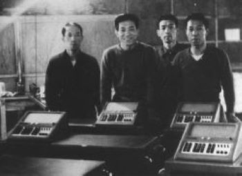
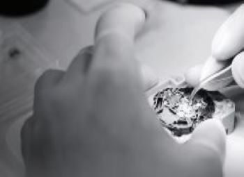

1. Xuất xứ thương hiệu casio:
-Thương hiệu Casio ra đời vào tháng 4 năm 1946 tại Tokyo, người sáng lập là ông Tadao Kashio. Đến năm 1957 Casio Computer Co., Ltd được thành lập bởi 4 anh em nhà Kashio.
- Năm 1974 Casio chính thức xâm nhập vào thị trường đồng hồ, với dòng sản phẩm đầu tiên là Casiotron. Và kể từ đó, những chiếc đồng hồ Casio dần dần đi theo sự phát triển của thế giới đồng hồ.

2. Các dòng sản phẩm nổi bật:
-Gồm các dòng sản phẩm: G-shock, Baby-G, Sheen Casio, Edifice Casio, Outgear, Data Bank, Protrek, Beside .....
- Tháng 4 năm 1983: chiếc đồng hồ chống sốc G-shock đầu tiên ra đời.
- Tháng 12 năm 1994: đồng hồ chống sốc Baby - G cho phụ nữ được phát hành.
- Năm 2000: hai dòng sản phẩm Sheen Casio và Edifice Casio ra đời.
- Tháng 11 năm 2004: Phát hành đồng hồ điều khiển vô tuyến chạy bằng năng lượng mặt trời Oceanus. 3. Ưu điểm của đồng hồ Casio:
- Tất cả các sản phẩm đồng hồ Casio đều được sản xuất, lắp ráp từ những linh kiện cao cấp trên dây chuyền hiện đại, đáp ứng các tiêu chuẩn khắt khe nhất nên có chất lượng tốt, độ bền cao, ít xảy ra các sự cố phiền toái khiến người dùng mất thời gian đi bảo hành, sửa chữa.
- Về độ bền của những chiếc đồng hồ Casio chính hãng thì không cần bàn luận, đánh giá quá nhiều nữa. Với mặt kính từ kính khoáng hoặc sapphire chống trầy xước cao, dây đeo có thể là dây đeo bằng nhựa, bằng da thật hay khung viền bằng thép không gỉ, những chiếc đồng hồ pin của Casio cho thời gian hoạt động bền bỉ nên bạn cứ yên tâm sử dụng dù trong bất cứ điều kiện nào.
